SWARMPEG / ON-CHAIN ART PREVIEW
A swarm with a pulse.
Nodes wake up. Connections draw and fade. Pixel agents blink as the network grows brighter and faster.

Resting · pulse 0
6 nodes · 6 second cycle

Active · pulse 500
12 nodes · 3.6 second cycle

Surging · pulse 1000
18 nodes · 1.2 second cycle